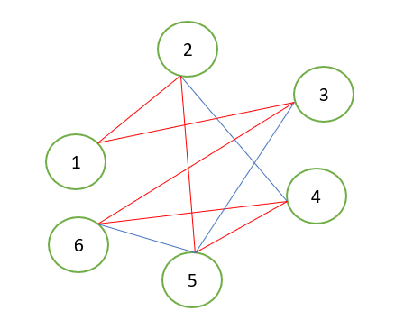

Problema comis voiajorului este o problemă celebră de informatică: Un comis-voiajor (agent comercial) trebuie viziteze n orașe. Cunoscându-se șoselele existente între orașe, să se determine o modalitate (toate modalitățile) prin care comis-voiajorul poate parcurge fiecare oraș o singură dată și se întoarce în orașul de plecare.
Dacă asociem problemei un graf neorientat, constatăm că trebuie să determinăm un (toate) ciclu elementar care trece prin toate vârfurile grafului. Un astfel de ciclu se numește ciclu hamiltonian.
Definiții:
-
Într-un graf neorientat, se numește lanț hamiltonian un lanț elementar care conține toate vârfurile grafului.
-
Într-un graf neorientat, se numește ciclu hamiltonian un ciclu elementar care conține toate vârfurile grafului.
-
Un graf neorientat se numește graf hamiltonian dacă conține un ciclu hamiltonian.
Pentru un graf orientat se pot definii noțiuni similare, de drum hamiltonian și circuit hamiltonian
Exemplu:
În graful de mai sus sunt evidențiate cu rosu muchiile care fac parte dintr-un ciclu hamiltonian: (1, 2, 5, 4, 6, 3).
În anumite condiții se poate stabili că un graf dat este hamiltonian. Dar aceste condiții sunt “de suficiență”. Dacă nu sunt îndeplinite, nu înseamnă că graful nu este hamiltonian!
Teoreme:
-
Fie G = (X, U) un graf neorientat cu n vârfuri și un lanț hamiltonian Dacă atunci graful este hamiltonian, unde d(x) este gradul vârfului x.
-
Fie G=(X,U) un graf neorientat cu n vârfuri. Dacă pentru orice pereche de vârfuri neadiacente distincte avem relația , atunci graful este hamiltonian.
-
Un graf neorientat în care gradul fiecărui vârf este mai mare sau egal cu jumătate din numărul de vârfuri este hamiltonian.